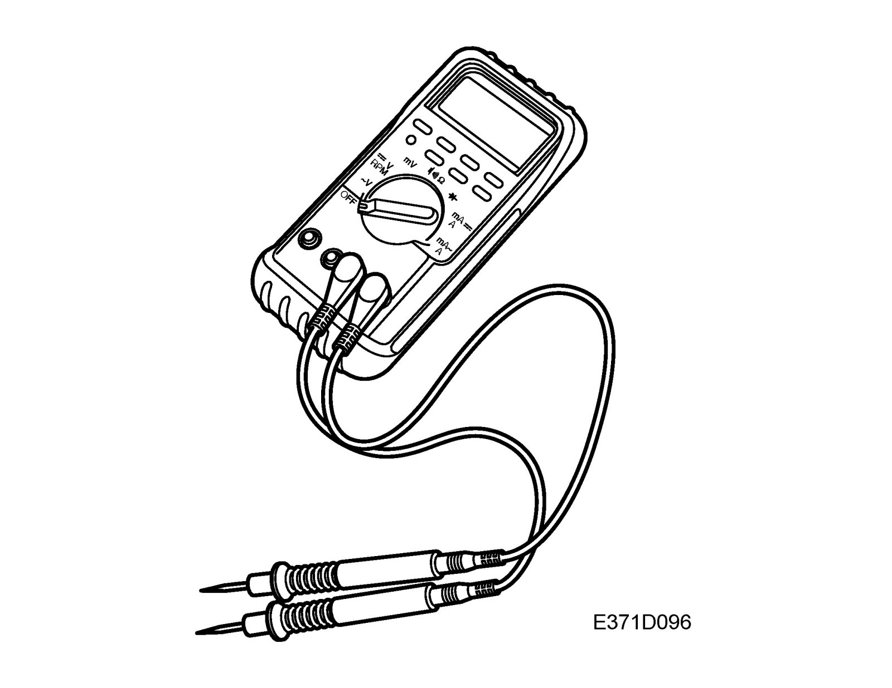
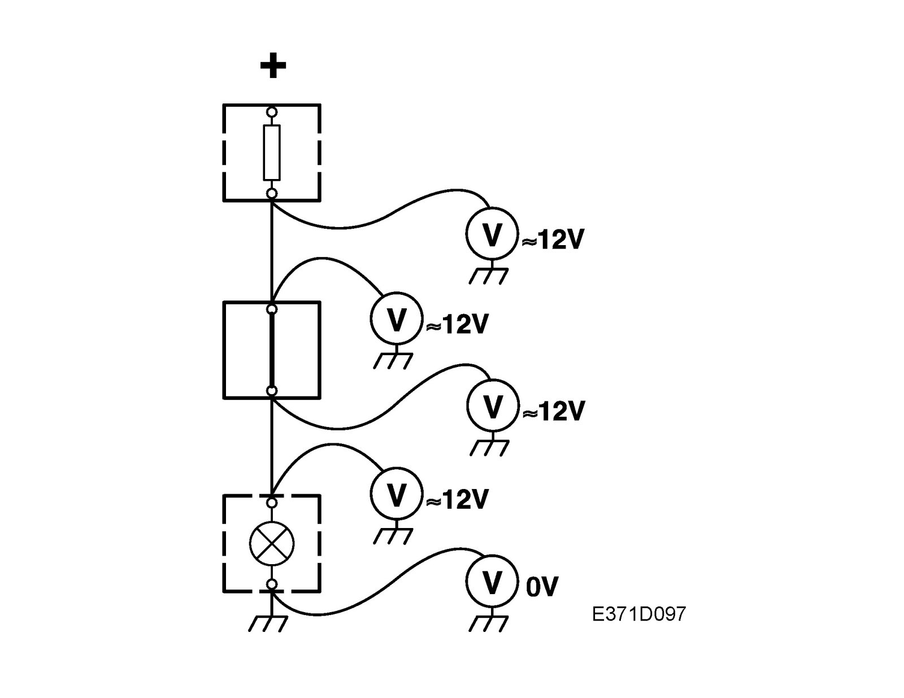
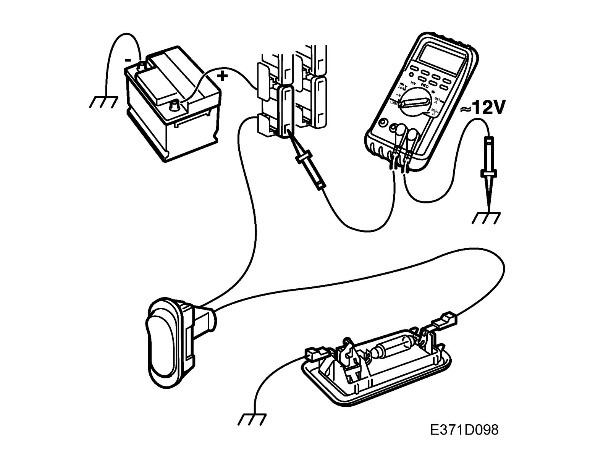
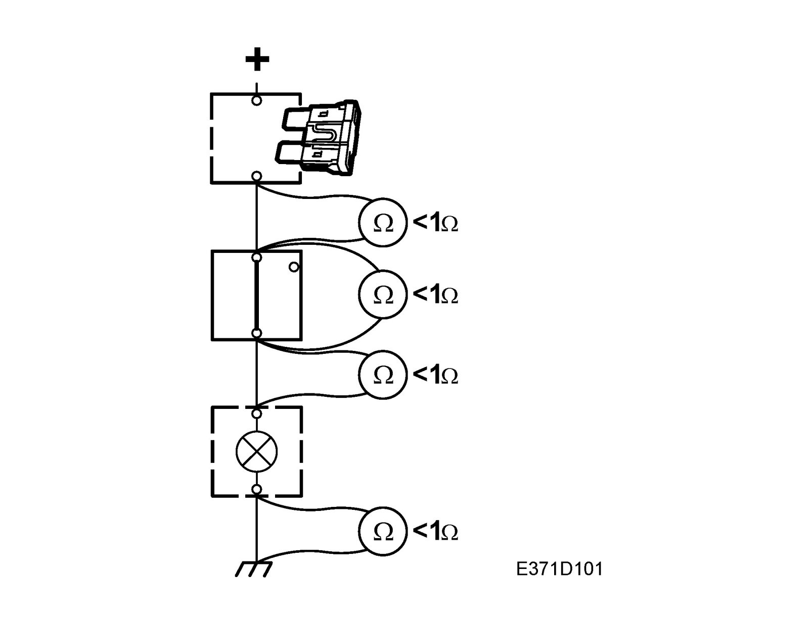
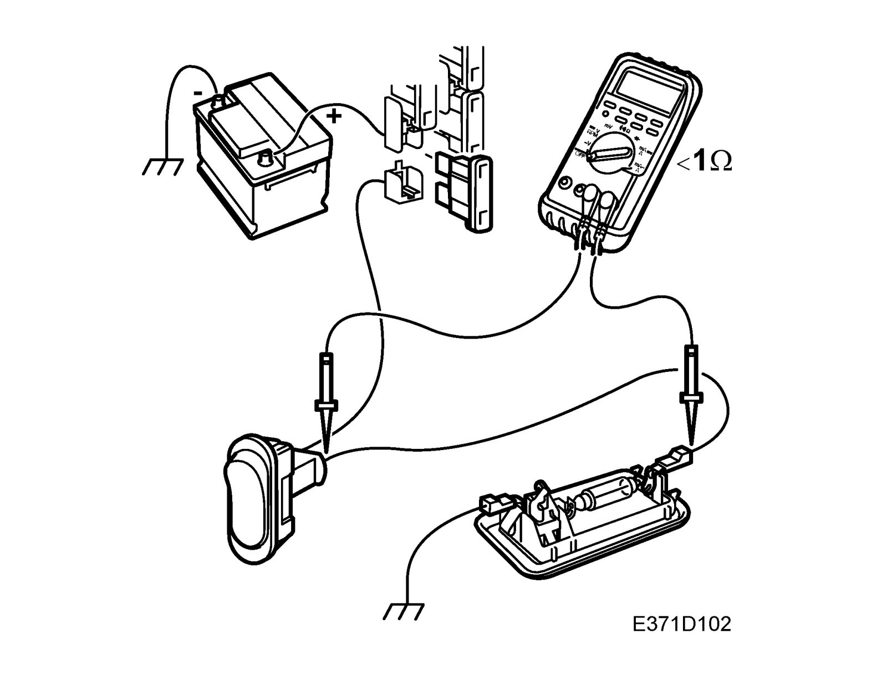
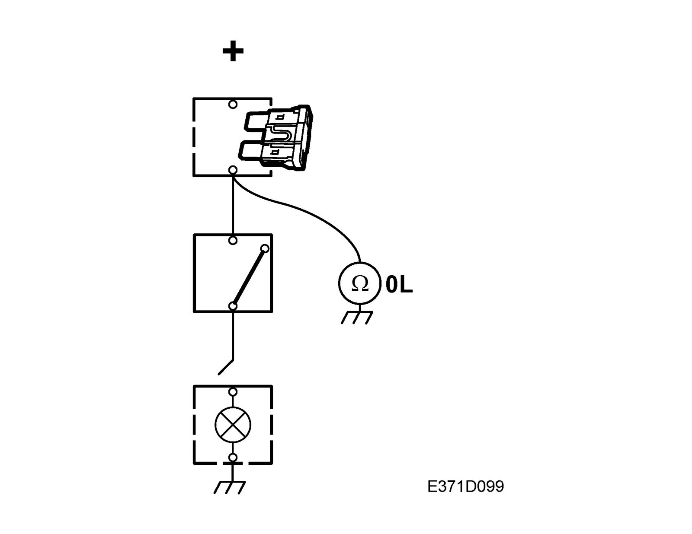
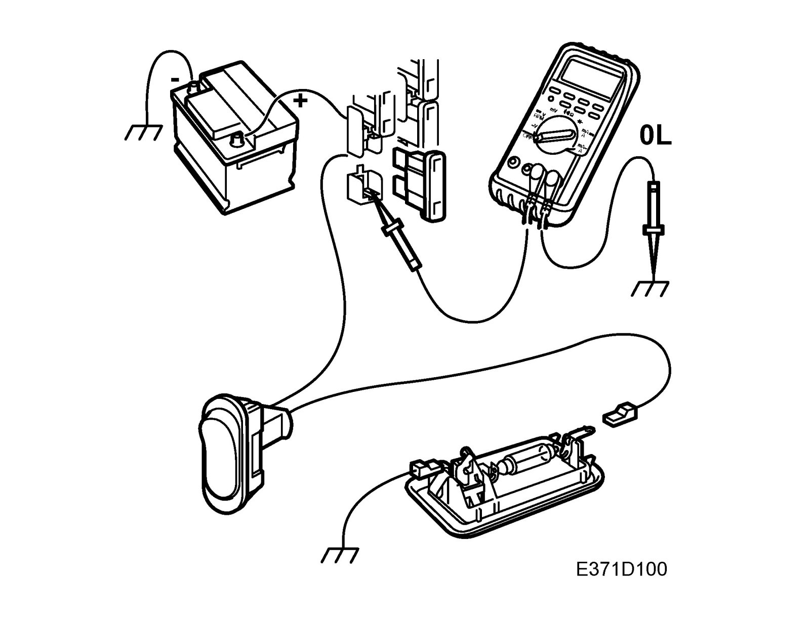

Checking For Open Circuits/Short Circuits
Checking for open circuits/short circuitsGeneral

Use a suitable instrument such as a multimeter.
An ohmmeter must not be used for testing components containing semi-conductors, e.g. control modules and time delay relays, etc.
The power supply to the system being resistance tested must be disconnected because the instrument will apply a low measuring current to the circuit.
This will ensure that there is no current already present in the circuit so that a reliable reading can be obtained.
Measuring voltage to check for open circuits.


1. Apply the load.
2. Set the multimeter to voltage measurement and connect the minus cable to a reliable grounding point.
3. Connect the positive cable of the instrument to the point where the voltage is being tested.
4. When testing the output side of a switch/control module, it is best to start testing from the component and then gradually work your way towards the load.
The voltage reading will cease as the location of the open circuits is passed.
5. When testing the input side of a switch/control module, it is best to start testing closes to the power source (often a fuse) and then gradually work your way towards the switch/control module/consumer.
The voltage reading will cease as the location of the open circuits is passed.
Measuring resistance to check for open circuits


1. Make sure there is no power being supplied to the component or lead to be checked (e.g. by removing the relevant fuse).
2. Set the multimeter to ohm measurement and connect the instrument to each end of the component/lead to be checked.
3. Jiggle the relevant wiring harness while observing the ohmmeter.
The resistance for a wiring harness should normally be less than 1 ohm. Special values apply to components.
Checking for short circuits to ground


1. Make sure there is no power being supplied to the lead to be checked (e.g. by removing the relevant fuse) and that any loads have been disconnected.
2. Set the multimeter till ohm measurement.
3. Connect one test lead to a reliable ground and the other to the point to be checked.
4. Carefully jiggle the wiring harness and check that the multimeter shows a constant infinite value (0L).